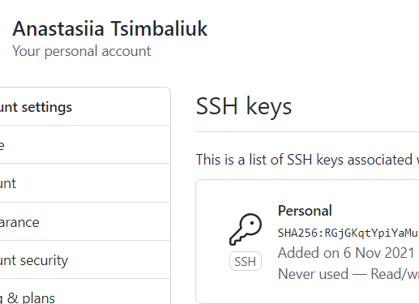
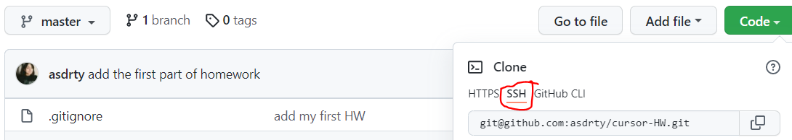

Base
- git config --global user.name blabla - додає твоє ім'я, щоб розуміти хто вніс зміни
- git config --global user.email blabal@bla - додаємо свій емайл
- git init - створює локальний репозиторій
- git status - показує нові файли або файли, які були змінені
- git add - список файлів, які ми замінили(вибираємо, що ми будемо комітити, не забудт поставити крапку)
- git commit - пишемо, що ми змінили, обов'язково на англ
- git log - показує всі комміти
- git checkout - здійснює перемикання між гілками
- git branch - керування гілками
- git push - додаємо наші файли в віддалений репозиторій
- git pull - отримуємо зміни з репозиторію
- git merge - об'єднує гілки
- git clone - клонує проєкт з віддаленого репозиторію
- .gitignore - додаємо файлики, які не треба додавати до віддаленого репозиторію
Advanced
- git revert - вертає комміт, створюючи новий
- git reset - відміна локальних змін в репозиторії
- git rebase - поєднує все зміни в один 'патч' з подальшою інтеграцією в активну гілку
- git cherry-pick - переносить окремі комміти з одного місця репозиторію до іншого, зазвичай між гілками розробки та обслуговування
- git stash - приховує зміни у файлах та зберігає їх окремо, щоб в майбутньому їх можна було повернути

